정보통신산업기사 (2020-06-27 기출문제)
1과목: 디지털전자회로
1. 무부하시 출력전압이 25[V]인 정전압회로에 임의의 부하를 연결했을 때 20[V]이면 전압 변동률은 몇 [%]인가?(오류 신고가 접수된 문제입니다. 반드시 정답과 해설을 확인하시기 바랍니다.)
- 10[%]
- 15[%]
- 20[%]
- 25[%]
(정답률: 58%)

2. 전파정류회로에서 실효값을 나타내는 식은?
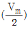
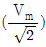
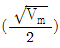
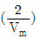
(정답률: 71%)
3. 다음 중 정류회로에서 다이오드의 순방향 저항(rd)에 의해 전압변동률이 제일 큰 것은?
- 반파 정류회로
- 브리지 정류회로
- 반파 배전압 정류회로
- 중간탭 정류회로
(정답률: 60%)
4. 다음 중 활성영역에서 능동 트랜지스터를 동작시키기 위해 요구되는 조건이 아닌 것은?
- 이미터 다이오드는 반드시 순방향 바이어스가 걸려야 한다.
- 베이스전류를 가장 크게 해야 한다.
- 컬렉터 다이오드는 반드시 역바이어스가 걸려야 한다.
- 컬렉터 다이오드 양단에 걸리는 전압은 반드시 항복전압보다 낮아야만 한다.
(정답률: 52%)
5. 다음 그림과 같은 전압궤환 바이어스회로에서 콘덴서 ‘C'에 대한 설명으로 틀린 것은?
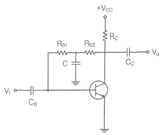
- 교류신호 이득 감소방지용 바이패스 콘덴서
- 콘덴서 C는 직류적으로 개방(Open)
- 콘덴서 C는 교류적으로 단락(Short)
- 교류신호 입력 시 베이스로 부궤환을 유도키 위한 소자
(정답률: 58%)
6. 전압증폭기의 전압이득이 1,000±100 일 때, 이 전압 이득의 변화를 0.1[%]로 하기 위한 부궤환 증폭기의 궤환량 β는 얼마인가?
- 10
- 0.879
- 0.422
- 0.099
(정답률: 70%)
7. B급 푸시풀 전력증폭기에서 평균 직류 컬렉터 전류는 어떻게 되는가?
- 입력신호전압이 커짐에 따라 줄어든다.
- 입력신호전압이 작으면 흐르지 않는다.
- 입력신호전압이 커짐에 따라 증가 된다.
- 입력전압의 대소에 불구하고 항상 일정하다.
(정답률: 62%)
8. 다음 중 가변 직류전원에 의해 주파수 가변이 가능한 것은?
- 수정 발진기
- VCO
- 암스트롱 발진기
- 이상 발진기
(정답률: 58%)
9. 다음 그림과 같은 발진기는?
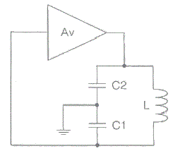
- 콜피츠 발진기
- 하틀리 발진기
- 이상 발진기
- 클랩 발진기
(정답률: 66%)
10. 다음 발진회로의 설명으로 틀린 것은?
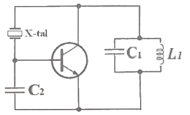
- 수정 진동자는 유도성으로 발진한다.
- Pierce-BC형 발진회로이다.
- 동조회로 LC의 공진 주파수는 발진주파수보다 조금 높게 한다.
- 콜피츠 발진회로를 변형한 회로로 컬렉터와 베이스 사이에 수정진동자를 넣어 발진회로를 구성하였다.
(정답률: 54%)
11. 다음 변조방식 중 아날로그 변조 방식이 아닌 것은?
- PPM
- PAM
- PCM
- PWM
(정답률: 72%)
12. 15[kHz]까지 전송할 수 있는 PCM 시스템에서 요구되는 최소 표본화 주파수는?
- 10[kHz]
- 20[kHz]
- 30[kHz]
- 40[kHz]
(정답률: 74%)
13. 다음 중 PPM파를 복조하여 신호파를 얻기 위한 방법으로 알맞은 것은?
- 저역 여파기를 통과시킨다.
- PAM으로 변환하여 저역 여파기를 통과시킨다.
- 가산 회로를 통과시킨 후 Clipper 회로를 통과시키고 여파기를 통과시킨다.
- PWM으로 변환하여 고역 여파기를 통과시킨다.
(정답률: 52%)
14. 진폭 변조에서 변조 지수가 1인 경우 변조 출력은 반송파 전력의 몇 배가 되는가?
- 1.5배
- 2배
- 2.5배
- 3배
(정답률: 55%)
15. 다음 중 톱니파 발생회로에 주로 사용되는 것은?
- Varactor
- MOS FET
- FET
- UJT
(정답률: 52%)
16. 일반적인 무안정 멀티바이브레이터(Unstable Multivibrator)에서 R1=R2=10[kΩ], C1=C2=100[pF]로 하면 출력 신호의 주파수는?
- 0.35[kHz]
- 0.71[kHz]
- 0.35[MHz]
- 0.71[MHz]
(정답률: 45%)
17. 10진수 10을 그레이코드(Gray code)로 변환한 것은?
- 1010
- 1110
- 1011
- 1111
(정답률: 62%)
18. 다음 논리회로에서 출력 Y의 방정식을 간략하게 한 것은?
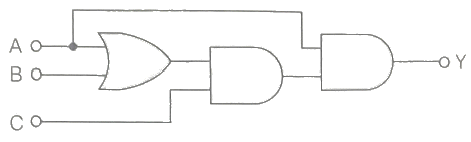
- Y=AC
- Y=ABC
- Y=AB+AC
- Y=AB+BC+AC
(정답률: 59%)
19. 다음의 회로에서 가정용 전원의 주파수 60[Hz]인 정현파를 적용했을 때 최종 구형파의 출력 주파수(Fo)는?
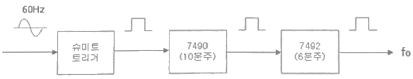
- 0.5[Hz]
- 1[Hz]
- 1.5[Hz]
- 2.0[Hz]
(정답률: 61%)
20. 2×4 디코더 회로도로 옳은 것은?(오류 신고가 접수된 문제입니다. 반드시 정답과 해설을 확인하시기 바랍니다.)
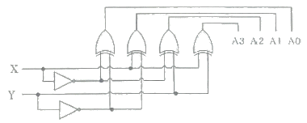
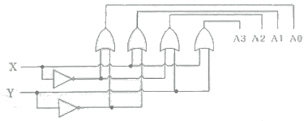
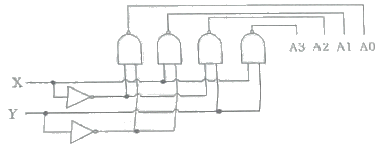
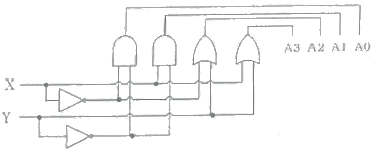
(정답률: 60%)
2과목: 정보통신기기
21. 다음 중 정보 단말기의 기능이 아닌 것은?
- 송·수신 제어 기능
- 출력 변환 기능
- 에러 제어 기능
- 다중화 기능
(정답률: 67%)
22. 전송 제어 장치(TCU)의 구성요소 중 회선 접속부를 통해 들어온 데이터를 직렬과 병렬 신호로 변환하는 것은?
- 신호 변환부
- 직·병렬 신호부
- 회선 제어부
- 입·출력 장치부
(정답률: 49%)
23. 단말기의 구성 중 전송 제어 장치(TCU)의 구성요소가 아닌 것은?
- 회선 접속부
- 입출력 제어부
- 회선 제어부
- 신호 변환부
(정답률: 62%)
24. DSU(Digital Service Unit)가 필요한 데이터 전송방식의 특징과 가장 거리가 먼 것은?
- 전송하고자 하는 비트열을 그대로 전송한다.
- 회선용량이 크다.
- 각종 전송신호의 왜곡이 최소화된다.
- 반송파 주파수를 사용한다.
(정답률: 55%)
25. 다음 보기의 전송제어 단계를 순서대로 나열한 것은?
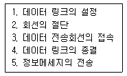
- 3→1→5→4→2
- 1→3→5→2→4
- 3→5→1→2→4
- 1→3→5→4→2
(정답률: 64%)
26. N 위상 변조에서 동기식 모뎀의 신호 속도가 M[baud/sec]인 경우 비트 속도를 구하는 식은?
- M log2N
- N log2M
- M log10N
- N log10M
(정답률: 67%)
27. 다음 중 다중화기의 종류에 대한 설명으로 옳지 않은 것은?
- 주파수 분할 다중화기(FDM)는 하나의 채널에 주파수 대역별로 전송로를 구성한다.
- 역다중화기(Inverse Multiplexer)는 협대역 통신으로 2,400[bps] 이하의 전송속도를 얻는다.
- 비동기 시분할 다중화기는 실제로 보낼 데이터가 있는 단말장치에만 동적으로 각 채널에 타임 슬롯을 할당한다.
- 광대역 다중화기는 여러 가지 다른 속도의 동기식 데이터를 묶어 광대역 전송이 가능하다.
(정답률: 65%)
28. 다음 중 주파수분할다중화(FDM)기의 설명이 아닌 것은?
- 동기식 데이터 다중화에 사용된다.
- 1,200[bps] 이하에서 사용된다.
- 채널간 완충지역으로 가드밴드(Guard Band)를 주어야 한다.
- 별도의 모뎀이 필요 없다.
(정답률: 47%)
29. 다음 중 고속 데이터 스트림을 두 개 이상의 저속 데이터 스트림으로 변환하여 음성대역 등의 변·복조기를 통해 전송하는 장치는?
- 광대역 다중화기
- 역 다중화기
- 지능 다중화기
- 음성 다중화기
(정답률: 66%)
30. 다음 중 전화기 회로의 기본 구성이 아닌 것은?
- 통화 회로
- 신호 회로
- 가입자 교환회로
- 측음 방지회로
(정답률: 70%)
31. 다음 중 전화기의 기능과 구성으로 적합하지 않는 것은?
- 통화상태와 신호상태를 분리하는 것은 훅(Hook) 스위치이다.
- 전화에 사용되는 주파수 대역은 국제적으로 300∼3400[Hz]이다.
- 수화기는 전기에너지를 음성에너지로 바꾸어주는 장치로서 진동판은 자유진동이 커야 한다.
- 송화기는 음성에너지를 전기에너지로 바꾸어주는 장치이다.
(정답률: 68%)
32. CATV에서 입력측 (C/N)=20이고, 출력측 (C/N)=10이라고 가정하면 잡음지수(Noise Factor)는?
- 0.5
- 1
- 2
- 3
(정답률: 73%)
33. “TV세트 위에 놓고 이용하는 상자”라는 뜻으로 가입자 신호변환 장치라고도 하며, 일반적으로 VOD, 홈쇼핑, 네트워크 게임 등 차세대 쌍방향 멀티미디어 통신서비스를 하는데 필요한 가정통신용 단말기를 무엇이라 하는가?
- Set-top Box
- Divix
- MODEM
- MP3
(정답률: 81%)
34. AM 수신기의 선택도를 향상하기 위한 설명으로 거리가 먼 것은?
- 동조회로의 Q를 증가시킴
- 고주파 및 중간주파 증폭단수 증가
- 공중선 회로의 밀결합
- 고주파 증폭회로의 부가
(정답률: 56%)
35. 다음 중 위성통신의 특징으로 옳지 않은 것은?
- 서비스지역의 광역성
- 통신품질의 균일성
- 통신거리에 무관한 경제성
- 통신용량에 무제한 광대역성
(정답률: 63%)
36. 이동통신에서 PAPR(Peak Average Power Rate)은 첨두전력 대 평균전력비를 말하는데, 첨두전력이 10이고, 평균전력이 1일 때 PAPR은?
- 0[dB]
- 1[dB]
- 10[dB]
- 100[dB]
(정답률: 74%)
37. 다음 중 스마트폰, 태플릿, e-Book 단말기 등의 각종 스마트기기를 이용한 학습을 의미하는 것은?
- 스마트 러닝(Smart Learning)
- 스마트 위크(Smart Work)
- 스마트 사회(Smart Society)
- 클라우드
(정답률: 79%)
38. VOD(Video On Demand) 시스템의 구성 중 전체 시스템의 리소스를 조정하고 운용하는 시스템의 중앙 처리부를 담당하는 구간은?
- Pumping부
- 전송부
- 사용자부
- Main Control부
(정답률: 77%)
39. 다음 중 VOD(Video On Demand) 시스템의 사용자부에 대한 설명으로 틀린 것은?
- 세션에 대한 물리적 관리를 진행한다.
- ‘클라이언트부’라고도 한다.
- 헤드엔드와 통신이 가능한 셋탑박스가 있다.
- 고객이 요청하는 시간과 콘텐츠를 상기 시스템과 실시간으로 통신하여 이용자에게 서비스를 제공한다.
(정답률: 66%)
40. GPS 위성을 통한 위치정보와 이동통신망을 활용하여 운전자 및 탑승자에게 각종 서비스를 제공하는 것은?
- 텔레메터링
- 텔레텍스
- 텔레메틱스
- 비디오텍스
(정답률: 70%)
3과목: 정보전송개론
41. PCM방식에서 입력신호의 최대신호가 2[kHz]인 경우, 나이퀴스트(Nyquist) 표본화 주파수(fs)와 표본화 주기(Ts)의 계산값은?
- fs=2[kHz], Ts=500[μs]
- fs=4[kHz], Ts=250[μs]
- fs=6[kHz], Ts=167[μs]
- fs=8[kHz], Ts=125[μs]
(정답률: 74%)
42. 주파수대역폭이 fd[Hz]이고 통신로의 채널용량이 6fd[bps]인 통신로에서 필요한 S/N비는?
- 15
- 31
- 63
- 127
(정답률: 67%)
43. 코드분할 다중화(CDM) 방식에 대한 설명으로 틀린 것은?
- 가드밴드(Guard Band)가 필요하다.
- 신호간의 간섭이 거의 없다.
- 주파수 확산대역방식을 사용한다.
- 보다 많은 가입자를 수용할 수 있다.
(정답률: 61%)
44. 다음 중 다원접속방식에서 이동통신 가입자 수용 용량이 가장 많은 것은?
- FDMA
- SDMA
- CDMA
- TDMA
(정답률: 74%)
45. ADSL 인터넷 회선에서 가장 큰 주파수 대역을 사용하는 것은?
- POTS
- 상향 스트림
- 하향 스트림
- 인밴드 시그널링
(정답률: 55%)
46. 동축케이블을 이용한 케이블TV 망에서 케이블TV 회선과 인터넷 사용을 위한 사용자 PC를 연결해 주는 장치는?
- 광중계기
- 케이블 모뎀
- 헤드앤드
- 트랜시버
(정답률: 76%)
47. 플라스틱 광섬유(PoF : Plastic optical Fiber)의 특성을 설명한 것 중 틀린 것은?
- 시공이 용이하므로 홈네트워크에 활용하면 효율적이다.
- 기존 유리 광섬유에 비하여 손실이 크다.
- 접속 등 다루기가 용이하므로 장거리 백본망용으로 활용 가능하다.
- 가격이 저렴하다.
(정답률: 59%)
48. 다음 중 지상 마이크로파의 설명으로 틀린 것은?
- 전송매체의 설치가 불가능하거나 설치 비용이 고가일 때 사용한다.
- 장거리에 대해 높은 데이터 전송률을 제공한다.
- 대기를 통한 가시거리의 마이크로웨이브 통신은 50킬로미터 이상 가능하다.
- 높은 구조물이나 좋지 않은 기상 조건에 영향을 받지 않는다.
(정답률: 73%)
49. 다음 중 동기식 전송에 대한 설명으로 틀린 것은?
- 수신 장치와 송신 장치가 계속 클럭 주파수로 동작한다.
- 한 블록씩 전송한다.
- 한 문자씩 전송한다.
- 블록 앞에는 동기문자를 사용한다.
(정답률: 66%)
50. 문자 동기 방식에서 문자동기를 유지시키거나 어떤 데이터 또는 제어문자가 없을 때 채우기 위해서 사용하는 문자 기호는?
- STX
- ETX
- SYN
- SOH
(정답률: 69%)
51. 다음 중 공통선 신호 방식에 대한 설명으로 옳지 않은 것은?
- 신호 송수신만을 위한 독립된 루트와 독립된 프로토콜을 사용하는 방식이다.
- 송신 및 수신 선로로 구분할 필요 없이 하나의 선로를 통해 송수신한다.
- 양방향의 통신이 가능한 신호방식이다.
- 통화로와 신호로가 같아 통화 중 신호 전달이 불가능하다.
(정답률: 64%)
52. Baseband 전송방식의 설명으로 다음 중 틀린 것은?
- 반송파가 없는 무변조 전송이다.
- 신호전력 스텍트럼이 고주파 대역에 집중되어 전송된다.
- 아날로그와 디지털 신호 모두에 사용이 가능하다.
- Baseband 신호는 에너지의 대부분이 DC 근처 내에 있는 신호를 의미한다.
(정답률: 35%)
53. 다음 중 프로토콜의 기본 구성요소로 틀린 것은?
- 구문
- 의미
- 타이밍
- 규칙
(정답률: 65%)
54. 라우팅 프로토콜에 대한 설명으로 틀린 것은?
- 라우팅은 패킷이 어떤 경로를 통해 가게 할 것인지를 결정한다.
- RIP는 전송경로가 멀어도 전송 품질이 좋은 경로로 라우팅한다.
- 정적 라우팅은 입력된 정보가 재입력 하기 전까지 변하지 않는다.
- 동적 라우팅은 인접한 라우터들 사이에서 네트워크 정보를 교환한다.
(정답률: 65%)
55. OSI 참조모델에 대한 설명으로 틀린 것은?
- 4개의 계층 구조를 갖는다.
- 시스템 간 상호접속을 위한 개념을 규정한다.
- 특정 시스템에 대한 프로토콜의 의존도를 줄여준다.
- 개방형 시스템들 간의 접속을 위해 ISO에서 만들었다.
(정답률: 73%)
56. IPv4 주소 클래스 중 연구를 우해 예약되어 있어 인터넷에서 사용할 수 없는 것은?
- A 클래스
- B 클래스
- C 클래스
- D 클래스
(정답률: 69%)
57. IPv4 주소에 대한 설명 중 틀린 것은?
- 1과 0의 16비트 열로 저장된다.
- 마침표에 의해 구분되는 네 부분의 10진수로 나타낸다.
- 주소의 각 부분은 8개의 2진수로 구성된다.
- 네트워크와 호스트 부분으로 구성된다.
(정답률: 55%)
58. VLAN(Virtual Lan)을 나누는 기반에 해당되지 않는 것은?
- IP 기반
- MAC 기반
- FTTH 기반
- 포트(Port) 기반
(정답률: 61%)
59. 통신방식에 의한 분류 중 양방향으로 송신이 가능하지만 동시에 송신이 불가능한 방식은?
- 단방향 전송방식
- 반이중 전송방식
- 전이중 전송방식
- 병렬 전송방식
(정답률: 78%)
60. 오류 검출 방법 중 Block 단위의 1의 수가 짝수 또는 홀수가 되도록 각 행에 Check bit를 부가하는 방식으로 옳은 것은?
- 수직 Parity Check 방식
- 수평 Parity Check 방식
- 정 마크 정 스페이스 방식
- 군계수 Check 방식
(정답률: 61%)
4과목: 전자계산기일반 및 정보설비기준
61. 컴퓨터의 하드웨어 구성 중 중앙처리장치에 해당하는 것은?
- 제어장치
- 입출력장치
- 보조기억장치
- 주기억장치
(정답률: 59%)
62. 다음의 보조기억장치 중 가상메모리(Virtual Memory)로 사용한다면 가장 우수한 것은?
- 자기디스크(Magnetic Disk Unit)
- 자기드럼장치(Magnetic Drum Unit)
- 자기테이프(Magnetic Tape)
- CCD 기억장치(Charge Coupled Device Memory)
(정답률: 61%)
63. 2진수 000101112을 10진수, 8진수, 16진수로 표현한 것은?
- (23)10, (27)8, (17)16
- (23)10, (28)8, (18)16
- (33)10, (29)8, (19)16
- (33)10, (30)8, (20)16
(정답률: 71%)
64. 다음 중 바이너리(Binary) 연산을 행하는 것은?
- OR
- Shift
- Rotate
- Complement
(정답률: 65%)
65. 다음 중 컴퓨터에서 한번에 처리할 수 있는 명령의 단위를 Word라 할 때, 풀 워드(Full-Word)의 Btye 수는?
- 2[byte]
- 4[byte]
- 8[byte]
- 16[byte]
(정답률: 57%)
66. 10진수 9를 그레이코드로 변환한 결과로 옳은 것은?
- 1100
- 1101
- 1110
- 1111
(정답률: 63%)
67. 운영체제의 기능 중 프로세서 상태에 따른 특성이 다른 것은?
- 활동 상태(Active, Swapped-in) - 기억장치를 할당 받은 상태
- 지연 대기 상태(Suspennded Blocked) - 기억장치를 할당 받은 상태
- 준비상태(Ready) - 기억장치를 할당 받은 상태
- 지연 준비 상태(Suspennded Ready) - 기억장치를 잃은 상태
(정답률: 56%)
68. CPU에서 처리되는 작업 중 메모리 장치 접근에 지나치게 페이지 폴트가 발생하여, 프로세스 수행에 소요되는 시간보다 페이지 교환에 소요되는 시간이 더 커지는 현상은?
- 워킹 세트(Working Set)
- 세마포어(Semaphore)
- 교환(Swapping)
- 스레싱(Thrashing)
(정답률: 70%)
69. 다음 중 태스크별 고유의 시간제약 이내에 확실한 출력처리가 필요한 국방, 항공분야 시스템에 적합한 운영체제는?
- 일괄처리 운영체제
- 대화형 운영체제
- 실시간 운영체제
- 분산 운영체제
(정답률: 73%)
70. 다음 중 C 언어의 변수에 대한 설명으로 틀린 것은?
- 변수는 값을 저장하는 기억장소의 주소, 길이, 타입의 세 가지 속성을 지닌다.
- 변수 이름은 영어 알파벳 문자나 밑줄 문자(_)로 시작해야 한다.
- 변수 이름은 영문 대문자와 소문자는 서로 구별되지 않는다.
- C 언어의 키워드는 변수 이름으로 사용될 수 없다.
(정답률: 77%)
71. 다음 중 과학기술정보통신부장관에게 등록을 하여야 하는 사업자는?
- 기간통신사업자
- 지상파방송사업자
- 부가통신사업자
- 정보통신공사업자
(정답률: 56%)
72. 다음 중 전력유도로 인한 피해가 없도록 전송설비 및 선로설비의 전력유도 전압에 대한 방지조치 대상 제한치로 잘못된 것은? (단, 예외 조항은 제외)
- 상시 유도위험종전압 : 60[V]
- 기기 오동작 유도종전압 : 15[V]
- 이상시 유도위험전압 : 300[V]
- 잡음전압 : 0.5[mV]
(정답률: 62%)
73. 구내통신설로설비의 구내통신 회선수 확보기준 중 대상건축물이 주거용인 경우 회선수 확보기준을 바르게 나타낸 것은?
- 국선단자함에서 세대단자함 또는 인출구구간까지 단위세대 당 1회선 이상 또는 광섬유케이블 2코아 이상
- 국선단자함에서 세대단자함 또는 인출구구간까지 단위세대 당 3회선 이상 또는 광섬유케이블 5코아 이상
- 국선단자함에서 세대단자함 또는 인출구구간까지 10제곱미터 당 1회선 이상 또는 광섬유케이블 2코아 이상
- 국선단자함에서 세대단자함 또는 인출구구간까지 10제곱미터 당 3회선 이상 또는 광섬유케이블 5코아 이상
(정답률: 58%)
74. 다음 중 분계점과 분계점에서의 접속기준에 관한 사항으로 잘못된 것은?
- 국선과 구내선의 분계점은 사업용 방송통신설비의 국선접속설비와 이용자 방송통신설비가 최초로 접속되는 점으로 한다.
- 방송통신망간 접속기준은 사업자 상호 간의 합의에 따른다. 다만, 과학기술정보통신부장관이 접속기준을 고시한 경우에는 이에 따른다.
- 분계점에서의 접속방식은 사업자 상호 간 접속방식을 정하는 경우를 제외하고는 간단하게 분리하거나 시험할 수 없도록 조치하여야 한다.
- 방송통신설비가 다른 사람의 방송통신설비와 접속되는 경우에는 그 건설과 보전에 관한 책임 등의 한계를 명확하게 하기 위한 분계점의 설정이 필요하다.
(정답률: 57%)
75. 통신공동구 등의 설치기준에 있어서 관로는 차도의 경우 지면으로부터 얼마 이상의 깊이에 매설하여야 하는가?
- 0.5[m]
- 1[m]
- 1.5[m]
- 2[m]
(정답률: 55%)
76. 통신국사 및 통신기계실의 입지조건으로 가장 부적절한 것은?
- 풍수해의 영향이 적은 곳
- 진동발생이 적은 곳
- 전자파장해의 우려가 없는 곳
- 통신정보 보호와 무관한 곳
(정답률: 78%)
77. 다음 중 비상사태가 발생한 경우 방송통신설비의 안전성 및 신뢰성을 확보하기 위한 대응대책으로 옳지 않은 것은?
- 임시 응급복구가 가능하도록 한다.
- 임시 방송통신회선을 설정한다.
- 저장된 데이터를 즉시 파괴한다.
- 광역응급구호 체제를 명확히 한다.
(정답률: 77%)
78. 영상정보처리기기를 설치목적과 다른 목적으로 임의로 조작하거나 녹음기능을 사용하다 적발될 경우 적용되는 벌칙으로 맞는 것은?
- 1년 이하의 징역 또는 1천만원 이하 벌금
- 2년 이하의 징역 또는 2천만원 이하 벌금
- 3년 이하의 징역 또는 3천만원 이하 벌금
- 5년 이하의 징역 또는 5천만원 이하 벌금
(정답률: 66%)
79. 감리원이 업무를 성실히 수행하지 않아 공사가 부실하게 될 우려가 있을 때 시정지시 또는 감리원의 변경요구 등 필요한 조치를 취할 수 있는 사람은 누구인가?
- 공사업자
- 공사발주자
- 공사용역업자
- 공사설계업자
(정답률: 62%)
80. 다음 중 기간통신사업자가 타인의 토지를 일시 사용하고자 미리 점유자에게 사용목적과 사용기간을 통지하고자 하였으나, 점유자의 주소 불명 등으로 통지할 수 없는 경우 취하여야 할 조치로 맞는 것은?
- 공고하여야 한다.
- 보증인을 세워야 한다.
- 공탁을 걸어야 한다.
- 해당 지자체에 신고하여야 한다.
(정답률: 58%)